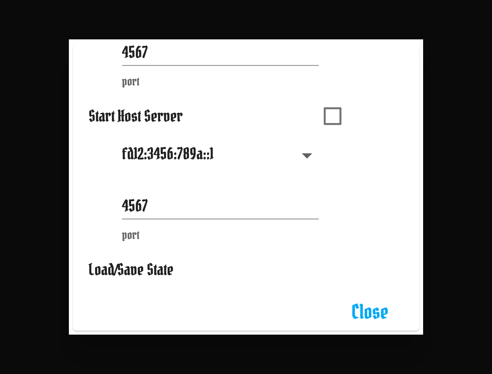
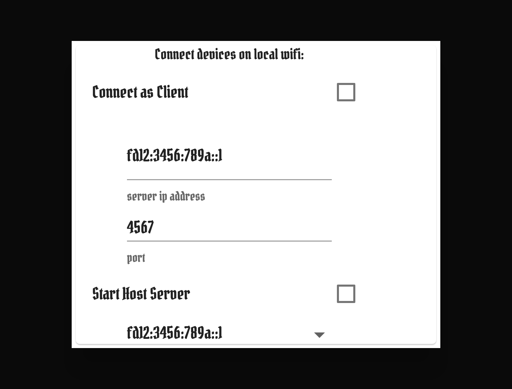

X-Haven Assistant — User Manual
§9Multiplayer
The app supports a host/client model for sharing game state across multiple devices around the table. One device hosts; others connect as clients. The host's state is authoritative.
Both hosting and joining are configured from the same place: open the sidebar drawer (≡), tap Settings, and scroll to the Connect devices on local wifi: subsection. That subsection holds two sibling controls — Connect as Client (with a server-IP-address text field and a port field) and Start Host Server (with a dropdown of detected local IPs and a port field). Toggling one disables the other: a single device hosts or joins, not both.
§9.1Hosting
≡ → Settings → Connect devices on local wifi: → Start Host Server. The dropdown immediately below the checkbox lists the local interfaces the device discovered; pick the address you want to advertise, then tap the checkbox to start listening. That's the address clients on the same LAN should type into their own server ip address field.

fd12:3456:789a::1 — the IPv6 analog of IPv4 RFC1918 private space). The port field defaults to 4567. Once the checkbox is on, the label flips to Stop Server; while the server is up, the Connect as Client row above (visible in Figure 9.2) becomes disabled.The server listens on the chosen address and port; the address shown is the one to share. Server lifecycle is implemented in lib/services/network/server.dart; the standalone variant lives in frosthaven_assistant_server/lib/standalone_server.dart for headless hosts.
No password / no auth handshake. The server accepts any client that knows the address and port — there is no shared-secret prompt, certificate check, or PIN exchange. Access control is by network reachability: a client either has a route to the host's IPv6 and the right port, or it doesn't. This is fine for trusted LAN play; do not expose the host to the public internet without a tunnel or VPN.
Caveats. Hosting from a phone over cellular usually doesn't work — most carriers block inbound connections. LAN hosting from a desktop is the most reliable; LAN hosting from a tablet is fine if it stays awake (consider the Wakelock setting on Android, which is on by default for this reason). Port forwarding is required for hosting across the public internet — most groups don't bother.
§9.2Joining
≡ → Settings → Connect devices on local wifi: → Connect as Client. Type the host's address into the server ip address field, set the port if it differs from the default, and tick the checkbox. The text field remembers the last successfully-connected address, so reconnecting on the same network is usually a one-tap operation. On successful connect, the server's full state is pushed to the client and replaces whatever was there locally.

fd12:3456:789a::1); the port field defaults to 4567. Tapping Connect as Client initiates the connection — the label cycles through Connecting… and lands at Connected as Client on success. Start Host Server peeks in below the port field; running it on this device disables the client row above (compare Figure 9.1).The first connect of a session reads from the server; subsequent commands flow bidirectionally. Both host and clients can issue commands — the server arbitrates ordering via command index (see §9.5).
§9.3What's synced, what isn't
| State | Synced? |
|---|---|
| Characters, monsters, standees, HP, conditions, initiative, round, modifier decks, elements | Yes (this is "game state") |
| Loot deck contents, character loot, sanctuary state | Yes |
| Undo / Redo history | Yes |
| Settings (theme, scaling, soft numpad, etc.) | No — local per device |
| Saved characters / character library | No — local per device |
| Network connection state (last-known address) | No — local per device |
The split is intentional: settings are per-user preferences (one player likes dark mode, another doesn't); game state is per-table.
§9.4Disconnect behavior
If a client loses connection (Wi-Fi drop, app backgrounded, host quits), the app surfaces an "error / disconnected / lost" toast via NetworkUI (§3.4) with a Retry option. Tapping retry re-establishes the connection using the last known address.
Mobile clients backgrounded for too long may have their connection torn down by the OS. On foregrounding, the toast surfaces and the user can retry — there is no foreground auto-reconnect. If Connect on startup (§11.4) is enabled, the app will attempt to reconnect on the next launch using the last-known address; this fires once roughly two seconds after launch and does not run on resume from background.
Host disconnect (host kills the app or loses power) is not graceful — clients will receive disconnect notifications. The host's state is preserved on its device; bringing the host back up and reconnecting clients restores the session at the last persisted command index.
§9.5Conflict resolution
Every command (HP change, condition toggle, draw, etc.) is tagged with a monotonic command index. The server is the source of truth for the index; clients submit commands relative to the server's current index.
The dedup logic lives in frosthaven_assistant/lib/services/network/server.dart (lines 64–94, the updateStateFromMessage method): if an incoming message's index is greater than the server's current index, it advances and broadcasts; if equal or lower, the message is logged and ignored. This is what protects the system from the most common multi-client races, including the morphing-button concern from issue #135 — two near-simultaneous Next Round commands from different clients hit the server with the same index, and only the first lands.
Wire format. The state-sync envelope is JSON: {"i":N,"d":"desc","e":{event},"s":"gamestate"}. Commit f193068c replaced the older text-delimited Index:N…Description:…GameState:… framing, which had no escaping and corrupted whenever game content contained one of those keywords. The legacy format is still parsed for backwards compatibility with older peers but is no longer emitted by current message producers.
Out-of-sync notification. If a client's local state diverges from the server (typically because of a missed broadcast), the next command issued will be rejected and a toast surfaces ("out of sync — reconnect"). Reconnecting fetches the server's authoritative state and replaces local.
§9.6Initiative secrecy
The classic Gloomhaven simultaneous-reveal moment: each player chooses cards in secret, initiative is revealed at the same time. The app supports this in network play by masking initiative values on devices that didn't enter them. All values reveal simultaneously when the round transitions to playTurns (the DrawCommand, fired when the host advances past initiative entry).
How the mask works. Secrecy is a per-device UI mask, not a server-side hide. The actual initiative value broadcasts to every connected client as part of normal state sync — but the InitiativeWidget displays ?? for any character whose initiative this device did not type into the local input field (see CharacterWidgetInternal.localCharacterInitChanges in frosthaven_assistant/lib/Layout/CharacterWidget/). The set of "characters I entered" is local to each device and is cleared on transition to playTurns.
Edge case: modifying an entered value. While the round is still in chooseInitiative, the entering client can re-type their value. The new value broadcasts immediately as a fresh SetInitCommand — but it remains masked as ?? on other clients, just like the original entry was. The reveal still happens at the playTurns transition, not on modify. (The cheating vector this guards against — peeking at others' inits before committing your own — isn't possible in the first place because the masks are uniform during chooseInitiative.)
Items that change initiative (Gloomhaven boots, etc.). The app does not model items, so an item-driven initiative change looks identical to a manual edit: the player retypes their initiative into the same input field, and the same SetInitCommand path runs. The same secrecy applies — the new value broadcasts and stays masked on other clients until the next playTurns transition. There is no special "item used" notification; from the app's perspective, a Hide Armor reveal and a fat-fingered correction are the same event.
Initiative secrecy is configurable per-table; if your group plays open initiative, the setting in §11 exposes values immediately on entry.